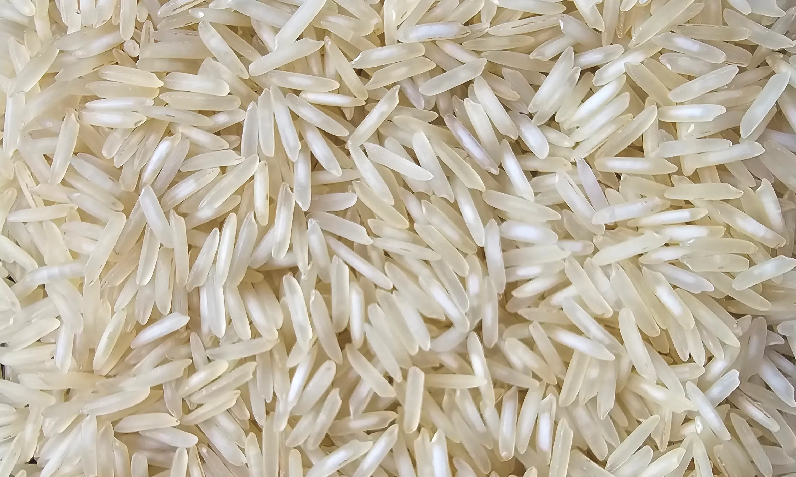
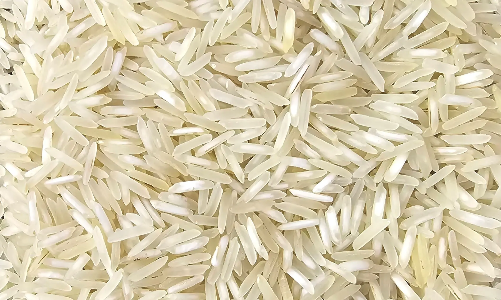
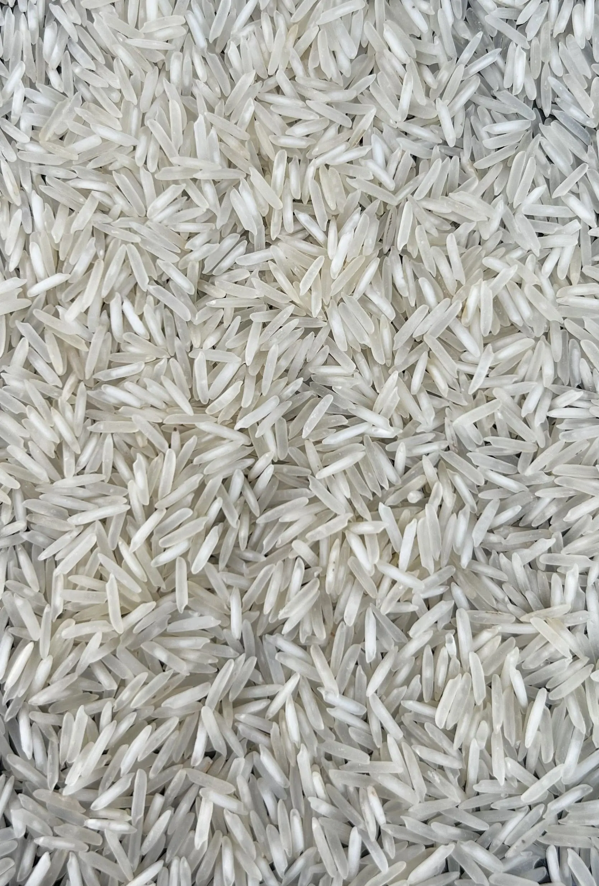

1121, 1509 and 1401 are three important numbered Basmati varieties. A common buyer question is simple: if three samples are all Steam rice, how do you tell them apart by looking at the grains?
First, compare the same processing style
Before comparing varieties, check whether every sample has been processed in the same way. Raw or White, Steam, Sella and Golden Sella are processing styles. They can change the grain's colour, surface and cooking behaviour.
That means 1121 Steam should be compared with 1509 Steam and 1401 Steam. Comparing 1121 Steam with 1401 Golden Sella may tell you more about processing than variety.



These photographs are reference examples from our product range. Crop, ageing, polishing, sorting, lighting and the offered lot can change appearance.
1121 vs 1509 vs 1401 at a glance
| Buyer question | 1121 Basmati | 1509 Basmati | 1401 Basmati |
|---|---|---|---|
| Common buying position | Often shortlisted for premium extra-long presentation. | Often discussed as a practical commercial Basmati option. | Often considered when aroma and cooked-kernel uniformity matter. |
| What to inspect dry | Average kernel length, slenderness, uniformity, taper, chalkiness and broken percentage. | The same measurements, with close attention to lot uniformity because similar processing can resemble 1121. | Uniformity, shape, chalkiness, broken percentage and consistency across the sample. |
| What to inspect cooked | Elongation, separation, shape retention, aroma and mouthfeel. | Elongation, cooking yield, separation, texture and consistency. | Uniform cooked shape, aroma, separation and texture. |
| Do not approve from | One photograph, a few hand-picked grains or a product name without a written lot specification. | ||
A six-step grain check for buyers
- Label every sample.Record the claimed variety, processing style, crop, ageing and supplier before opening the sample.
- Compare a representative quantity.Do not judge the lot from four or five attractive grains selected by hand.
- Use the same surface and light.Spread each sample separately on a clean, dark, matte surface under neutral light.
- Measure, do not guess.Check a random set of kernels for average length and width. Record broken, chalky, damaged and discoloured grains.
- Cook equal samples the same way.Use equal rice weight, soaking time, water, vessel and cooking time. Compare elongation, separation, aroma, shape and texture.
- Match the result to the contract.Keep a sealed approval sample and make sure the agreed variety and quality limits appear in the written commercial specification.
Variety is not the same as grade
A rice sample can be genuine 1121, 1509 or 1401 and still fail a buyer's quality target. Variety names do not tell you the broken percentage, moisture, foreign matter, polish, crop, ageing, residue position, cooking result or packaging quality.
This is why a useful purchase enquiry combines the variety with the processing style and measurable acceptance points. For example: “1121 Steam Basmati, current or aged crop as agreed, buyer-approved grain and cooking specification, 25 kg bags, delivery to the stated destination.”
Which variety should you choose?
Choose 1121 for
Buyers prioritising extra-long visual presentation and strong cooked elongation, subject to sample and specification approval.
View 1121 optionsChoose 1509 for
Commercial buying programmes balancing long-grain presentation, cooking performance, availability and target price.
View 1509 optionsChoose 1401 for
Buyers comparing aroma, cooked-kernel uniformity and an alternative numbered Basmati position.
View 1401 optionsWhat to send us for an accurate quote
Send the variety, processing style, approximate metric tons, pack size and material, destination, buying timeline and any fixed quality limits. If you have not finalised the variety, send your target cooked result and market position so we can recommend an appropriate sample.
Buyer questions about 1121, 1509 and 1401
Can I identify 1121, 1509 and 1401 Basmati only by looking at the grain?
You can use grain appearance for an initial comparison, but sight alone is not reliable authentication. Compare the same processing style, measure a representative sample, cook it under controlled conditions and confirm the written product specification.
Why should Steam rice be compared with Steam rice?
Raw, Steam, Sella and Golden Sella are processing styles that change colour, surface appearance and cooking behaviour. Comparing different processing styles can hide the differences you are trying to evaluate between varieties.
Which Basmati variety is chosen for extra-long cooked presentation?
1121 Basmati is widely shortlisted when extra-long grain presentation and elongation are priorities. The offered lot still needs to be checked because crop, ageing, milling and sorting affect the final result.
What should a bulk buyer request before placing an order?
Request a representative sample, processing style, crop and ageing details, average grain measurement, broken tolerance, moisture, cooking expectations, packaging, current documents and a written commercial specification.
Technical references
This guide combines the buyer question in the supplied transcript with photographs from our product range and established variety information.